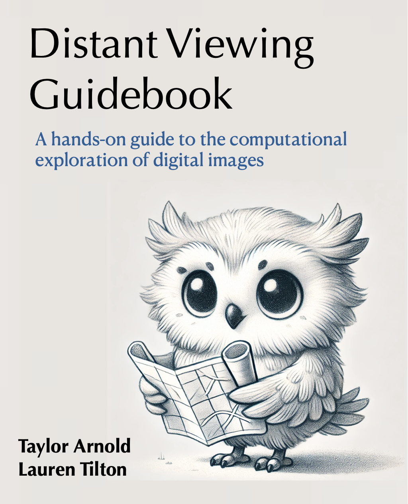

Distant Viewing Guidebook
Welcome!

This is a book.
Achiam, Josh, Steven Adler, Sandhini Agarwal, Lama Ahmad, Ilge Akkaya, Florencia Leoni Aleman, Diogo Almeida, et al. 2023. “GPT-4 Technical Report.” arXiv Preprint arXiv:2303.08774.
Adnan, Myasar Mundher, Mohd Shafry Mohd Rahim, Amjad Rehman, Zahid Mehmood, Tanzila Saba, and Rizwan Ali Naqvi. 2021. “Automatic Image Annotation Based on Deep Learning Models: A Systematic Review and Future Challenges.” IEEE Access 9: 50253–64.
Afzal, Shehzad, Sohaib Ghani, Mohamad Mazen Hittawe, Sheikh Faisal Rashid, Omar M Knio, Markus Hadwiger, and Ibrahim Hoteit. 2023. “Visualization and Visual Analytics Approaches for Image and Video Datasets: A Survey.” ACM Transactions on Interactive Intelligent Systems 13 (1): 1–41.
Anitha Kumari, K, C Mouneeshwari, RB Udhaya, and R Jasmitha. 2020. “Automated Image Captioning for flickr8k Dataset.” In Proceedings of International Conference on Artificial Intelligence, Smart Grid and Smart City Applications: AISGSC 2019, 679–87. Springer.
Archives, United States National. n.d. “DOCUMERICA: The Environmental Protection Agency’s Program to Photographically Document Subjects of Environmental Concern, 1972–1977.” https://catalog.archives.gov/id/542493.
Arnold, Taylor, and Lauren Tilton. 2019. “Distant Viewing: Analyzing Large Visual Corpora.” Digital Scholarship in the Humanities 34 (Supplement_1): i3–16.
———. 2020. “Distant Viewing Toolkit: A Python Package for the Analysis of Visual Culture.” Journal of Open Source Software 5 (45): 1800.
———. 2023. Distant Viewing: Computational Exploration of Digital Images. MIT Press.
Chen, Hailin, Fangkai Jiao, Xingxuan Li, Chengwei Qin, Mathieu Ravaut, Ruochen Zhao, Caiming Xiong, and Shafiq Joty. 2023. “ChatGPT’s One-Year Anniversary: Are Open-Source Large Language Models Catching Up?” arXiv Preprint arXiv:2311.16989.
Coleman, Catherine Nicole. 2020. “Managing Bias When Library Collections Become Data.” International Journal of Librarianship 5 (1): 8–19.
Cuntz, Alexander, Paul J Heald, and Matthias Sahli. 2023. “Digitization and Availability of Artworks in Online Museum Collections.” World Intellectual Property Organization (WIPO) Economic Research Working Paper Series, no. 75.
Deal, Laura. 2015. “Visualizing Digital Collections.” Technical Services Quarterly 32 (1): 14–34.
Demiralp, Çagatay, Carlos E Scheidegger, Gordon L Kindlmann, David H Laidlaw, and Jeffrey Heer. 2014. “Visual Embedding: A Model for Visualization.” IEEE Computer Graphics and Applications 34 (1): 10–15.
Di Lenardo, Isabella, Benoı̂t Laurent Auguste Seguin, and Frédéric Kaplan. 2016. “Visual Patterns Discovery in Large Databases of Paintings.” In Digital Humanities 2016.
Dı́az-Rodrı́guez, Natalia, and Galena Pisoni. 2020. “Accessible Cultural Heritage Through Explainable Artificial Intelligence.” In Adjunct Publication of the 28th ACM Conference on User Modeling, Adaptation and Personalization, 317–24.
Flueckiger, Barbara, and Gaudenz Halter. 2020. “Methods and Advanced Tools for the Analysis of Film Colors in Digital Humanities.” DHQ: Digital Humanities Quarterly 14 (4).
Fraser, Kathleen C, Svetlana Kiritchenko, and Isar Nejadgholi. 2023. “A Friendly Face: Do Text-to-Image Systems Rely on Stereotypes When the Input Is Under-Specified?” arXiv Preprint arXiv:2302.07159.
Gefen, Alexandre, Léa Saint-Raymond, and Tommaso Venturini. 2021. “AI for Digital Humanities and Computational Social Sciences.” Reflections on Artificial Intelligence for Humanity, 191–202.
Hiippala, Tuomo, and John A Bateman. 2022. “Semiotically-Grounded Distant Viewing of Diagrams: Insights from Two Multimodal Corpora.” Digital Scholarship in the Humanities 37 (2): 405–25.
King, Ryan C, Vishnu Bharani, Kunal Shah, Yee Hui Yeo, and Jamil S Samaan. 2024. “GPT-4V Passes the BLS and ACLS Examinations: An Analysis of GPT-4V’s Image Recognition Capabilities.” Resuscitation 195.
Klinkert, Ivo, Liam A McDonnell, Stefan L Luxembourg, AF Maarten Altelaar, Erika R Amstalden, Sander R Piersma, and Ron Heeren. 2007. “Tools and Strategies for Visualization of Large Image Data Sets in High-Resolution Imaging Mass Spectrometry.” Review of Scientific Instruments 78 (5).
Knuth, Donald E. 1984. “Literate Programming.” Comput. J. 27 (2): 97–111. https://doi.org/10.1093/comjnl/27.2.97.
Lee, Benjamin Charles Germain. 2023. “The ‘Collections as ML Data’ Checklist for Machine Learning and Cultural Heritage.” Journal of the Association for Information Science and Technology.
Lei, Yiming, Zilong Li, Yangyang Li, Junping Zhang, and Hongming Shan. 2024. “LICO: Explainable Models with Language-Image Consistency.” Advances in Neural Information Processing Systems 36.
Liu, Fang, Mohan Zhang, Baoying Zheng, Shenglan Cui, Wentao Ma, and Zhixiong Liu. 2023. “Feature Fusion via Multi-Target Learning for Ancient Artwork Captioning.” Information Fusion 97: 101811.
McInnes, Leland, John Healy, and James Melville. 2018. “UMAP: Uniform Manifold Approximation and Projection for Dimension Reduction.” arXiv Preprint arXiv:1802.03426.
Meinecke, Christofer, Chris Hall, and Stefan Jänicke. 2022. “Towards Enhancing Virtual Museums by Contextualizing Art Through Interactive Visualizations.” ACM Journal on Computing and Cultural Heritage 15 (4): 1–26.
Moreux, Jean-Philippe. 2023. “Intelligence Artificielle Et Indexation Des Images.” In Journées Du Patrimoine écrit:“l’image Aura-t-Elle Le Dernier Mot? Regards Croisés Sur Les Collections Iconographiques En Bibliothèques”.
Morse, Christopher, Blandine Landau, Carine Lallemand, Lars Wieneke, and Vincent Koenig. 2022. “From #Museumathome to #Athomeatthemuseum: Digital Museums and Dialogical Engagement Beyond the COVID-19 Pandemic.” ACM Journal on Computing and Cultural Heritage (JOCCH) 15 (2): 1–29.
Murtagh, Fionn, and Pierre Legendre. 2014. “Ward’s Hierarchical Agglomerative Clustering Method: Which Algorithms Implement Ward’s Criterion?” Journal of Classification 31: 274–95.
Paiss, Roni, Hila Chefer, and Lior Wolf. 2022. “No Token Left Behind: Explainability-Aided Image Classification and Generation.” In European Conference on Computer Vision, 334–50. Springer.
Petukhova, Alina, Joao P Matos-Carvalho, and Nuno Fachada. 2024. “Text Clustering with LLM Embeddings.” arXiv Preprint arXiv:2403.15112.
Puscasiu, Adela, Alexandra Fanca, Dan-Ioan Gota, and Honoriu Valean. 2020. “Automated Image Captioning.” In 2020 IEEE International Conference on Automation, Quality and Testing, Robotics (AQTR), 1–6. IEEE.
Qi, Zhongang, Saeed Khorram, and Li Fuxin. 2021. “Embedding Deep Networks into Visual Explanations.” Artificial Intelligence 292: 103435.
Qi, Zhongang, and Fuxin Li. 2017. “Learning Explainable Embeddings for Deep Networks.” In NIPS Workshop on Interpretable Machine Learning. Vol. 31.
Radford, Alec, Jong Wook Kim, Chris Hallacy, Aditya Ramesh, Gabriel Goh, Sandhini Agarwal, Girish Sastry, et al. 2021. “Learning Transferable Visual Models from Natural Language Supervision.” In International Conference on Machine Learning, 8748–63. PMLR.
Rinaldi, Antonio M, Cristiano Russo, and Cristian Tommasino. 2023. “Automatic Image Captioning Combining Natural Language Processing and Deep Neural Networks.” Results in Engineering 18: 101107.
Sheng, Shurong, and Marie-Francine Moens. 2019. “Generating Captions for Images of Ancient Artworks.” In Proceedings of the 27th ACM International Conference on Multimedia, 2478–86.
Siddiqui, Nabeel. 2024. “Cutting the Frame: An in-Depth Look at the Hitchcock Computer Vision Dataset.” Journal of Open Humanities Data 10 (1).
Smits, Thomas, and Melvin Wevers. 2023. “A Multimodal Turn in Digital Humanities. Using Contrastive Machine Learning Models to Explore, Enrich, and Analyze Digital Visual Historical Collections.” Digital Scholarship in the Humanities 38 (3): 1267–80.
Stefanowitsch, Anatol. 2020. Corpus Linguistics: A Guide to the Methodology. Language Science Press.
Straka, Milan, Jan Hajic, and Jana Straková. 2016. “UDPipe: Trainable Pipeline for Processing CoNLL-u Files Performing Tokenization, Morphological Analysis, Pos Tagging and Parsing.” In Proceedings of the Tenth International Conference on Language Resources and Evaluation (LREC’16), 4290–97.
Tan, Mingxing, and Quoc Le. 2019. “EfficientNet: Rethinking Model Scaling for Convolutional Neural Networks.” In International Conference on Machine Learning, 6105–14. PMLR.
Verma, Akash, Arun Kumar Yadav, Mohit Kumar, and Divakar Yadav. 2024. “Automatic Image Caption Generation Using Deep Learning.” Multimedia Tools and Applications 83 (2): 5309–25.
Wevers, Melvin, and Thomas Smits. 2020. “The Visual Digital Turn: Using Neural Networks to Study Historical Images.” Digital Scholarship in the Humanities 35 (1): 194–207.
Whitelaw, Mitchell. 2015. “Generous Interfaces for Digital Cultural Collections.” Digital Humanities Quarterly 9 (1): 1–16.
Windhager, Florian, Paolo Federico, Günther Schreder, Katrin Glinka, Marian Dörk, Silvia Miksch, and Eva Mayr. 2018. “Visualization of Cultural Heritage Collection Data: State of the Art and Future Challenges.” IEEE Transactions on Visualization and Computer Graphics 25 (6): 2311–30.
Wu, Wenhao, Huanjin Yao, Mengxi Zhang, Yuxin Song, Wanli Ouyang, and Jingdong Wang. 2023. “GPT4Vis: What Can GPT-4 Do for Zero-Shot Visual Recognition?” arXiv Preprint arXiv:2311.15732.
Ye, Yilin, Rong Huang, and Wei Zeng. 2022. “VISAtlas: An Image-Based Exploration and Query System for Large Visualization Collections via Neural Image Embedding.” IEEE Transactions on Visualization and Computer Graphics.
Yin, Shukang, Chaoyou Fu, Sirui Zhao, Ke Li, Xing Sun, Tong Xu, and Enhong Chen. 2023. “A Survey on Multimodal Large Language Models.” arXiv Preprint arXiv:2306.13549.
You, Haoxuan, Haotian Zhang, Zhe Gan, Xianzhi Du, Bowen Zhang, Zirui Wang, Liangliang Cao, Shih-Fu Chang, and Yinfei Yang. 2023. “Ferret: Refer and Ground Anything Anywhere at Any Granularity.” arXiv Preprint arXiv:2310.07704.